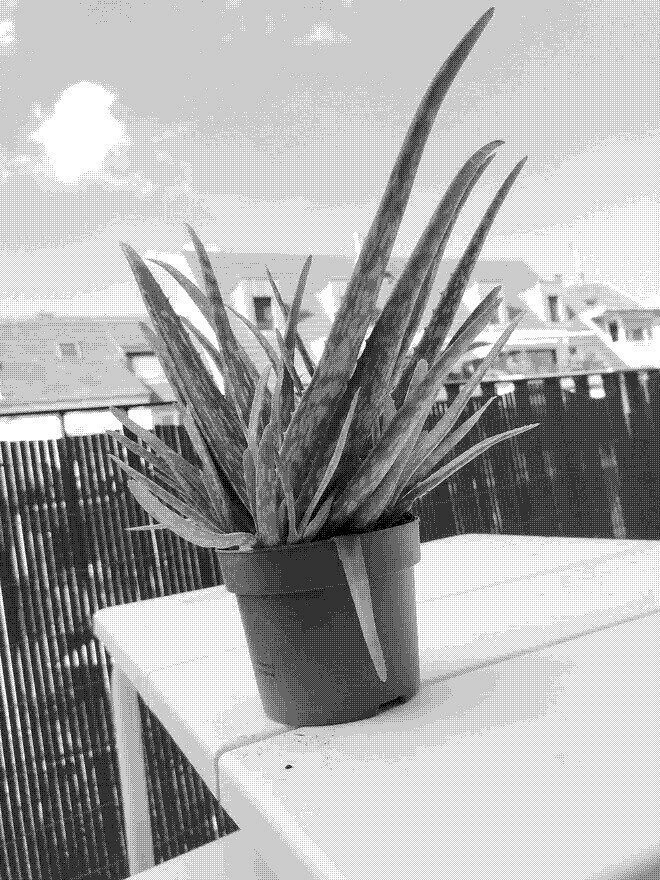

Aloe vera

Care
A well-known succulent, widely used as a medicinal plant.
- Likes bright and indirect sunlight
- Do best in temperatures between 13-27°C
- Very prone to root rot: Water about every 3 weeks, when the soil is roughly 3/4 dry
- Can be divided by cutting the root zone in half
- Also makes offsets (pups) that can be replanted